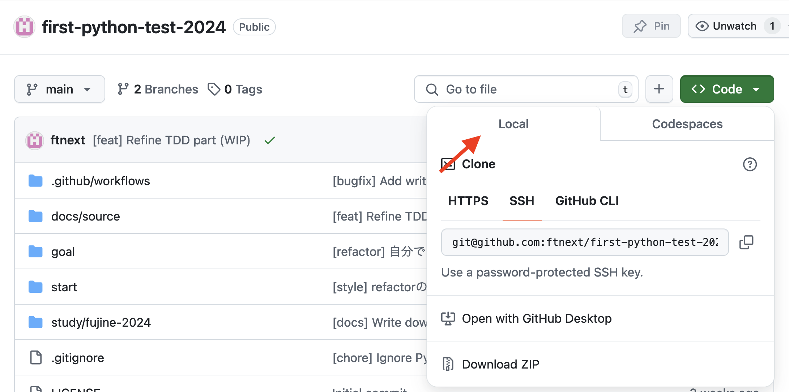
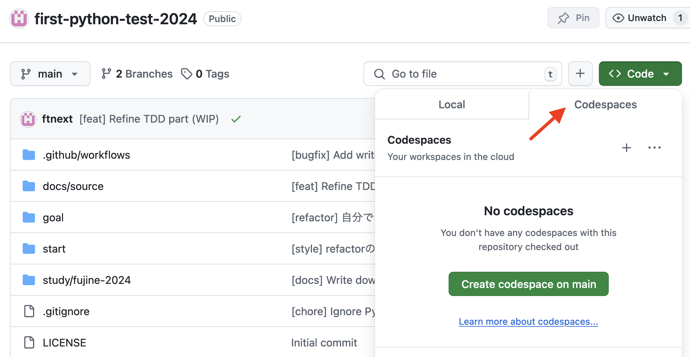

準備¶
https://github.com/ftnext/first-python-test-2024 を開きます
どちらかを選んでください。
おすすめは選択肢1️⃣です。
選択肢1️⃣ ローカル開発環境¶
お手元のPCにPython環境が必要です。
本リポジトリをclone（またはZIPダウンロード）
start ディレクトリで進めます
Python 3.10以上（Structural Pattern Matching を使いたいため）
$ python -m venv .venv --upgrade-deps
$ source .venv/bin/activate
$ python -m pip install -e '.[dev]'
pytestとプロジェクトをインストールする
注釈
editable install
最初はスクリプトで全然よいのですが、高機能なものを作ろうとするとコード量が増え、1スクリプトだと限界が訪れます。
複数ファイルを プロジェクト として扱う。
プロジェクトを再配布できるようにしています（
pyproject.toml）開発中のプロジェクトのインストールは editable install （pip install -e）
ソースコードを
site-packages 下にコピーしません。editable installしておけば、開発中にコードを変更しても再インストール不要です。
選択肢2️⃣ GitHub Codespaces¶
ブラウザとGitHubアカウントだけ必要
Codespacesは使い捨ての環境なので、仮想環境は不要です。
start ディレクトリに移動して
$ python -m pip install -e '.[dev]'
注釈
標準に寄せたので uv お好きにどうぞ
start ディレクトリにて
$ uv pip install -e '.[dev]'
$ uv run pytest